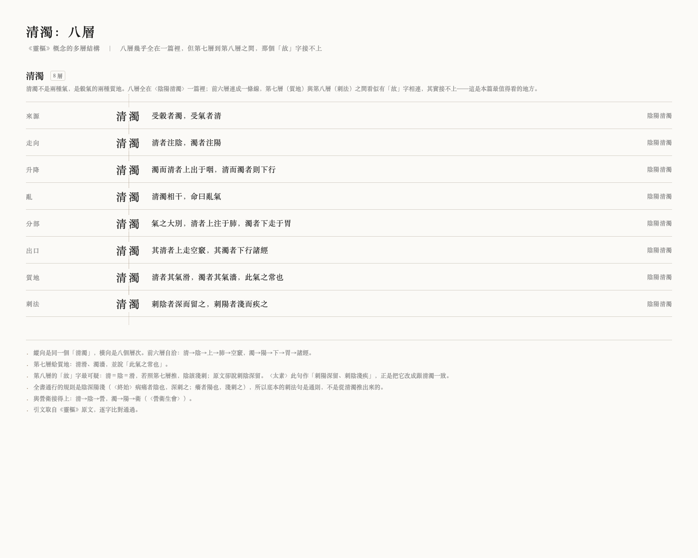

| 版本 | v1.0.0 大樣（未發布） |
|---|---|
| 規模 | 81 篇 · 題庫 1031 題 · 文件 100 份 |
| 底本 | 四部叢刊景明嘉靖趙府居敬堂本（Kanripo KR3e0002） |
| 授權 | 待定（本樣稿末頁列出待決事項） |
市面上多數靈樞讀物只做到「讀懂」。這份材料的重點是練：讀完一段原文，立刻有題可做；做錯，能看到錯在哪一句。
| 想做的事 | 怎麼做 |
|---|---|
| 練 | Anki 匯入 export/靈樞_填空.apkg，708 張填空卡；正面輸入、Enter 即時判定，接受異體與簡體。 |
| 讀 | 原文看 底本/靈樞經_SBCK_底本.md；概念看 docs/49；一篇一篇看 docs/00_索引.md。 |
| 查 | export/索引.csv（名詞 → 篇）；export/題庫_全.csv（16 欄，可篩）。 |
1. 原文層絕不由模型生成，每句都能回到底本。
2. 找不到依據時寫「找不到」，不補一個看起來合理的。
3. 能力邊界寫在成品裡——所以每一題都標了答案類型與待核狀態。
（全篇 314 字，此處節引首段；完整原文見 `底本/`。）
卷六音釋節錄：便溱緻悗空……
第40篇｜一、同篇兩見，作「清濁相干命曰亂氣」與「清濁相于者以數調之也」，〈五亂〉底本二見亦作「相于」；《太素》五見皆作「相干」。「干」「于」形近，底本自相不一，當以「干」為正（K17）。二、刺法句底本作「刺陰者深而留之，刺陽者淺而疾之」，《太素》作「刺陽者深而留之，刺陰者淺而疾之」，楊上善注以清滑者淺疾、濁澀者深留為說，張介賓注則以陰者在裏、陽者在表為說；……
「清濁」在靈樞裡出現 102 次，卻沒有一句定義。圖的作用不是裝飾，是把散在經文裡的八個層次攤開，讓人看見它們其實是同一條路線。

圖檔：export/多層_清濁.png；資料：data/多層_清濁.json；圖說與查證：docs/77。
正面不顯示答案；背面固定附出處與免責。異體與簡體由卡片內 JS 判定，與 scripts/grade.py 共用同一張對照表。
| # | 問題 | 級 |
|---|---|---|
| A1 | 所有「某病取某穴」「某證用某方」的主張，皆未經任何療效驗證 | 高 |
| A2 | 作者未見原書；版刻、避諱、刻工、行款全不可見。使用者有影印本與《醫部全錄》可補，但須逐頁拍照 | 中 |
| A3 | 註家配對是否切題、篇旨概括是否忠實、體裁分類是否得當，屬專業判斷 | 高 |
| A4 | 沒找過任何真實學習者試讀或作答；可讀性、難度、遷移效果全未知 | 高 |
| A5 | 哪些內容對病人有害、哪些禁忌具臨床權重，需醫師判斷 | 高 |
| A6 | 針刺手法（如「如蚊䖟止」）、指下感覺，文字無法傳遞 | 中 |
完整 34 條見 data/能力邊界.csv。
· 所有臨床主張未經驗證，不可據以施治。
· 15 條答案為整理語（已逐題標明），不是原文連續字串。
· 6 道案例題與 19 條註家配對待專家核。
| 項目 | 選項 |
|---|---|
| 授權 | CC BY-NC-SA 4.0 ／ CC BY-SA 4.0 ／ 保留所有權利（本稿目前留白） |
| 書名 | 《靈樞自學材料》／《靈樞：可練的讀本》／其他 |
| 樣張篇目 | 現用第 40 篇〈陰陽清濁〉（短、有校記）；可換〈本輸〉或〈經脈〉 |
| 案例題比例 | 維持 6 道樣板 ／ 找人寫到 20–30 道再發布 |
scripts/make_proof.py 產生；數字與引文皆取自現有資料。